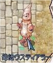
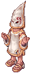
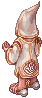
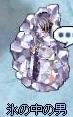
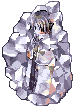
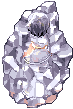
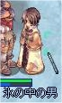
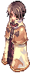

画像にリンクがはってあるものは、クリックすると別窓で大きめサイズが表示されます。
[ウスティアラー]
所在地；ラヘル中央やや北（157,183） |
|  |
[魔法使いマヒオ]
所在地；氷の洞窟2F中央やや南西（120,105） |
|  |
[ハミオン]
所在地；ラヘル5時方向フレイヤの泉北側（264,98） |
   |
[魔法使いマヒオ]
所在地；氷の洞窟2F中央やや南西（120,105） |
|  |
back
(c) Gravity Co., Ltd. & Lee MyoungJin(studio DTDS). All rights reserved.
(c) GungHo Online Entertainment, Inc. All Rights Reserved.
当コンテンツの再利用（再転載・配布など）は、禁止しています。